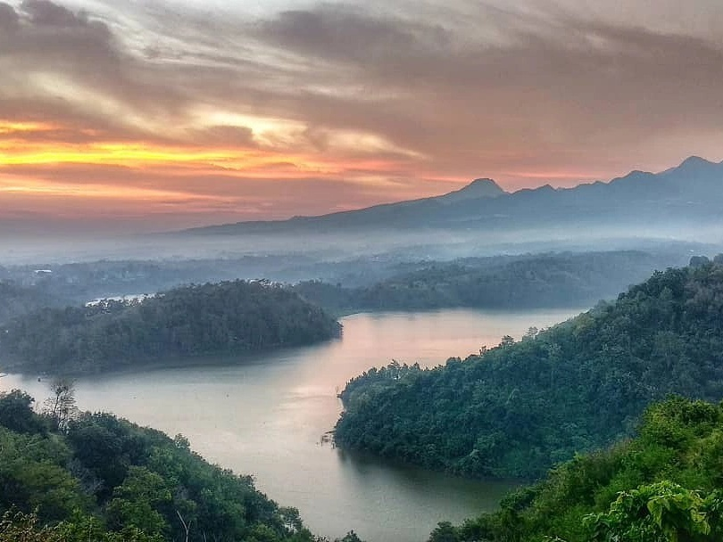
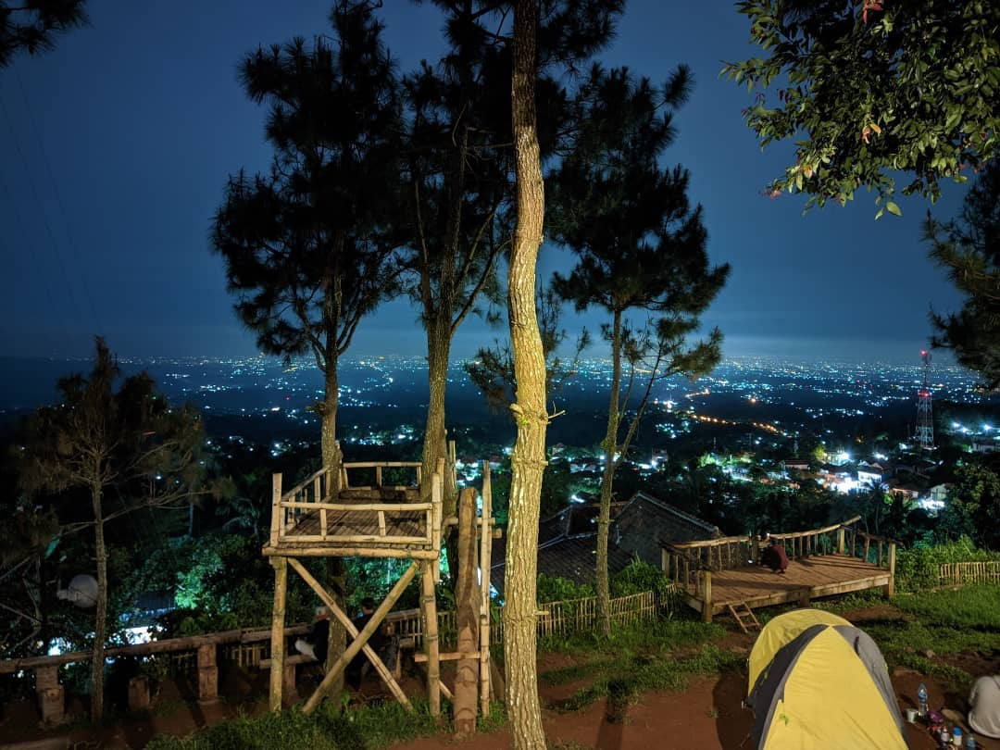
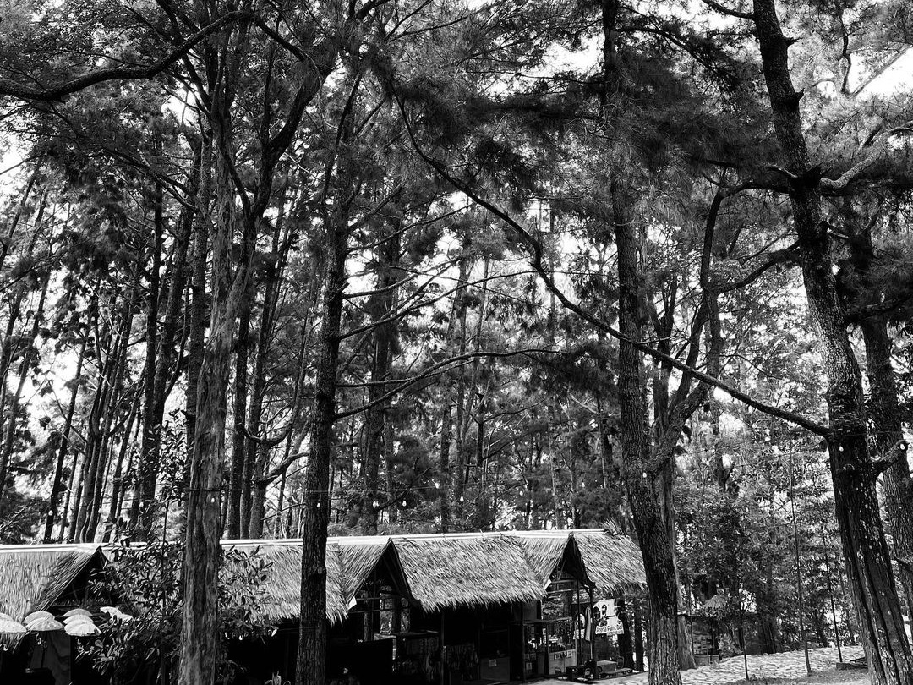
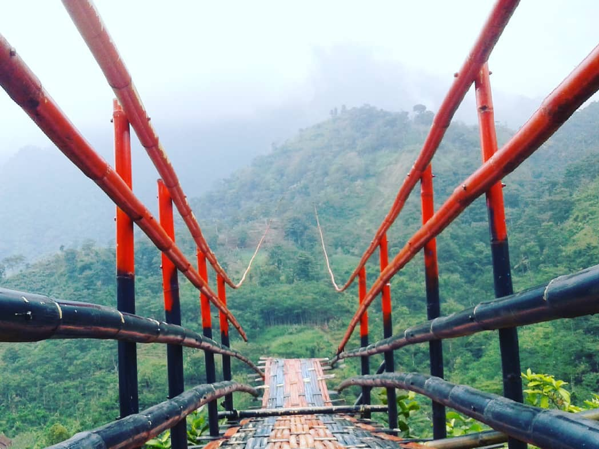

TEMUKAN TUJUAN ANDA SEKARANG
Berikut adalah daftar destinasi wisata yang dapat anda kunjungi di Kota Tegal.

TRANS STUDIO MINI
Selengkapnya
Nikmati keindahannya Air Terjun Montel Muria
Selengkapnya

Nikmati keindahannya Bendungan Logung
Selengkapnya

Nikmati keindahannya Wisata Alam Bukit Sepuser
Selengkapnya

Nikmati keindahannya Wisata Alam Bumi Perkemahan Kajar
Selengkapnya

Nikmati keindahannya Wisata Alam Selam Semliro
Selengkapnya